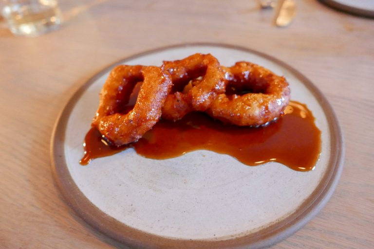
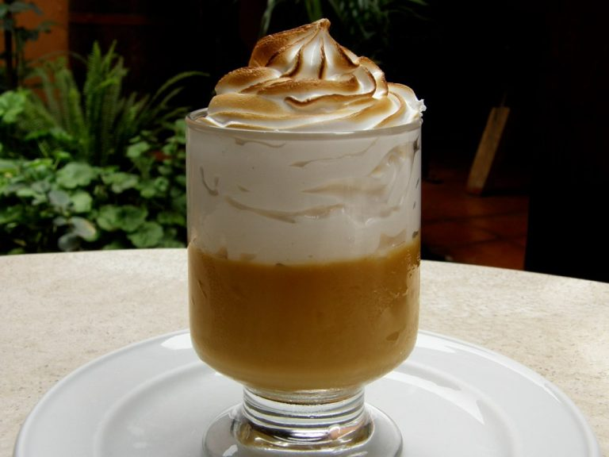
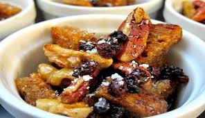

1. Picarones
Los picarones se vienen preparando desde el Virreinato, mezclando las verduras típicas de la región con ingredientes traídos por los españoles. Son una combinación entre dulce y salado que sirve para alegrarte después de cualquier comida, acompañado por un chocolate caliente, un café o, si tienes sed, por una deliciosa chicha morada.
Puedes encontrar buenos picarones en la Alameda de los Descalzos, en el centro de Lima, o en el distrito de Barranco.

2. Suspiro a la limeña
Un plato suave y dulce, de origen capitalino. Se elabora a partir del manjarblanco y su receta es muy versátil. Posee diferentes variaciones, dependiendo de los ingredientes adicionales. Lo importante en su preparación es que el merengue quede levantado para darle su apetitosa imagen.
Cuenta la historia que este postre fue inventado, en la forma en la que se conoce hoy, por Amparo Ayarza, esposa del poeta José Gálvez Barrenechea. Sin embargo, fue el famoso escritor quien le dio el nombre al postre por su curiosa forma, que, a su parecer, era como un “suspiro de mujer”.

3. Ranfañote
Este postre es uno de los más antiguos del país. Su origen se enlaza a los esclavos negros, ya que estos recibían como parte de su pago pedazos de pan duro. Con el tiempo, decidieron experimentar con el pan para mejorar su sabor y concibieron este manjar.
El ranfañote se realiza con pan, chancaca, pasas, pecanas o nueces, coco y queso fresco. Si bien no es tan fácil de conseguir, es común en ferias gastronómicas.
